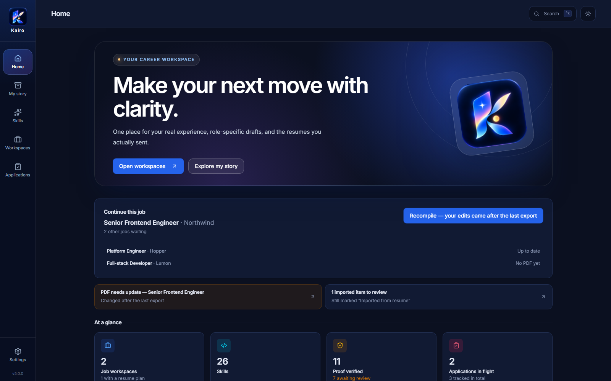
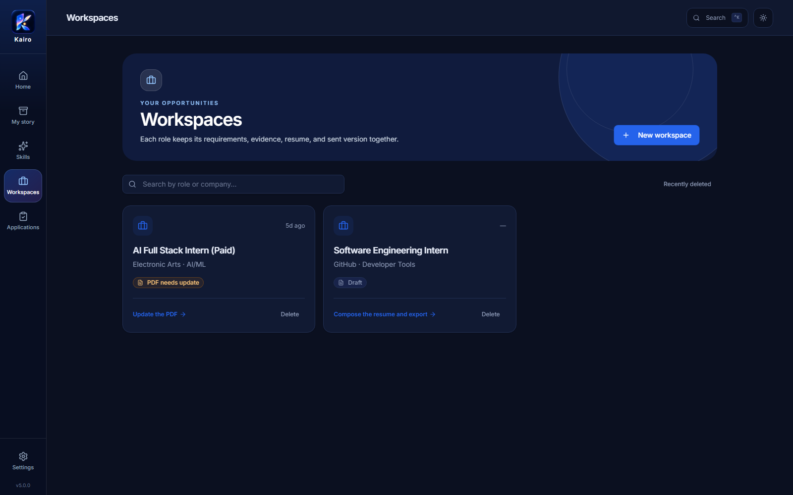
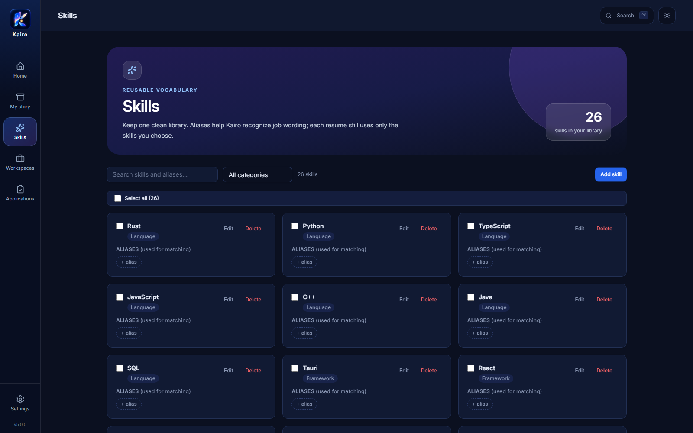

Keep your story in one place
Import a resume or add experience yourself. Review extracted records and keep the original passages nearby for context.
Kairo v5.0.0 · free and open source
Turn real experience into a focused resume for the role ahead. Understand the requirements, choose what belongs, and review the PDF you actually send.
Local-first desktop app · Windows 10/11 · optional AI

YOUR CAREER, CONNECTED
Kairo gives your experience a home, then helps you make a deliberate resume for each opportunity. Your facts stay reusable. Your choices stay yours.
Import a resume or add experience yourself. Review extracted records and keep the original passages nearby for context.
Manage a clean skill library with aliases. Choose the skills that appear on each resume separately.
Keep a job's requirements, evidence choices, draft, PDF, versions, and application history together.
FROM JOB POSTING TO PDF
Kairo shows what a role asks for and where your experience supports it. You can accept a match, correct a fact, or leave an honest gap.
Paste a job description and review the extracted requirements. Reopening the same posting returns to its workspace.
See clear, partial, and missing support. Pick the records and skills that belong on this resume.
Edit and reorder the draft, then inspect the compiled PDF before saving a version or applying.


YOUR FOUNDATION
My Story keeps your experience and projects reusable. Skills live in a separate library, so importing a resume does not force every skill onto every draft.
Source context stays visible. Imported passages remain attached to their records for review.
Aliases help recognition. A role can use different wording for a skill you already have.
You choose what appears. Resume selection remains separate from the library.
WRITE WITH CONFIDENCE
Write every line yourself, or connect an OpenAI-compatible provider for suggestions. Kairo compares a proposed rewrite with its source and checks for unsupported claims. You decide whether to accept it.
Automated claim checks are a guardrail, not a guarantee of factual accuracy. Always review the final PDF.
Built internal dashboards with React and TypeScript.
Developed React and TypeScript dashboards for internal teams.
DESIGNED FOR TRUST
Kairo is open source and local-first. It keeps the writing process visible instead of hiding it behind a score.
Your career data is stored in SQLite on your computer. Using a remote AI provider sends the context needed for a rewrite to that provider.
See the compiled document, spot layout problems, and re-export when your saved draft changes.
Save a reviewed resume version and link it to the application where you used it.
READY WHEN YOU ARE
Download Kairo for Windows. No account or subscription. AI is optional, and the core resume workflow works without it.
Windows 10/11 · 64-bit installer · PDF engine includedGOOD TO KNOW
Read the README for setup, limitations, and developer instructions.
No. Resume import, role matching, editing, PDF export, versions, applications, and backups work without an AI provider. AI adds optional wording suggestions.
Kairo keeps your records in a local SQLite database. If you choose a remote AI provider, the role and supporting resume context needed for a suggestion is sent to that provider. The browser demo uses sample data.
The downloadable installer is for Windows 10/11. The core is tested on macOS and Linux, but those platforms do not have an official Kairo installer yet.
Text-based PDF, DOCX, and pasted text are supported. A scanned PDF without a text layer needs OCR elsewhere or manual entry.